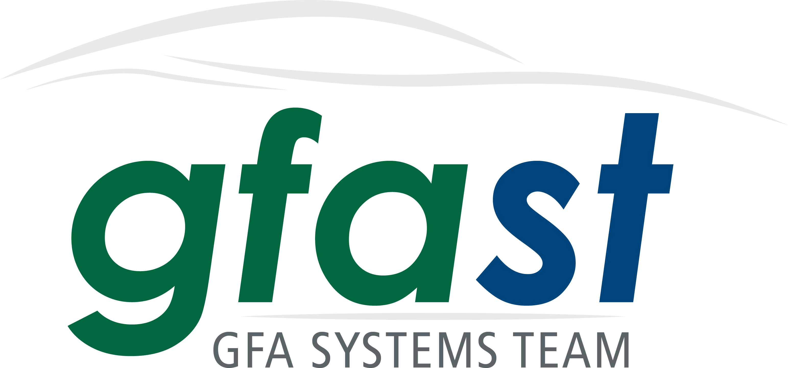

Welcome to GFAST Central’s documentation¶
Contents:
ManuApps¶
The master branch of this repository provides a GFAST standard bare-bones Flask framework. Fork this to begin development on Manulife web apps.
- Gitlab does not currently allow the forking of a Group project to a project within the same Group
- (https://gitlab.com/gitlab-org/gitlab-ce/issues/17358). Instead
- Fork to personal.
- Rename the project (in GitLab Settings).
- Fork back to the group.
- Delete the personal fork.
- As you work on your personal site, avoid editing the “core” javascript, css, and templates. See the Developing your own website section below.
Installation¶
Most likely you do not want to work on this repository directly. Instead, clone the site you are working on, MyManuAppSite
Step 1: Clone the repository
>>> 'git clone https://gitlab.manulife.com/GFAST/*MyManuAppSite*.git MyManuAppSite' _
>>> cd MyManuAppSite
- Step 2: Checkout to the required branch where your project is
>>> git branch checkout DevProj
- Step3: Create a virtual environment, activate it, install dependencies. Note, make sure you are using
virtualenv see https://realpython.com/blog/python/python-virtual-environments-a-primer/ and http://stackoverflow.com/questions/29950300/what-is-the-relationship-between-virtualenv-and-pyenv for a brief description. If the virtualenv library is not installed the virtual environment, the venv that gets included will include site-packages from the system-wide location. From a shell within the cloned location MyManuAppSite
>>> pip install virtualenv >>> python -m venv . >>> .\Scripts\activate.ps1 >>> python -m pip install --upgrade pip >>> pip install -r requirements.txt
if pip fails with an SSLError, on Windows you can create %APPDATA%\pip\pip.ini with the content:
.. note::
This might not work because of Artifcatory or SSH authentication issues. If you get any errors inline with this use the following to by-pass that.>>> pip install -r requirements.txt --trusted-host pypi.org --trusted-host files.pythonhosted.org --trusted-host pypi.python.org
Step4: We optionally use pywin32 for authenticating against Active Directory. If you will not be using the LDAP authentication, download the appropriate version from https://sourceforge.net/projects/pywin32/files/pywin32/. Pip in a virtual environment cannot install binaries, so use easy_install. To install:
>>> easy_install pywin32-220.win-amd64-py3.5.exe (or the appropriate file)
Step5: Start the service
>>> python run.pyNote
If the environment you are working in doesn’t have internet access, do the above steps (up to 3) from a computer that does and run. >>> mkdir dependencies >>> cd dependencies >>> pip install -r requirements.txt –download=”./dependencies” You might want to try this if you get errors. >>> pip download -r requirements.txt Then copy those wheels, zips, and tarballs over to your working environment.
Developing your own website¶
You really shouldn’t be developing in the ManuApps repository. It is fairly locked down, with pull requests requiring multiple approvals.
Instead, you should have forked the ManuApps repository to your own. That said, you still want to benefit from development that is happening within the ManuApps repository. To facilitate this, and to ease the sharing of code, we recommend setting up a ‘manuapps’ remote branch immediately (see step 1 below).
Git accommodates many workflows, but our recommended workflow is as seen below.
Incorporating ManuApps updates into the fork¶
add ManuApps as a remote repository:
>>> git remote add manuapps 'https://gitlab.manulife.com/GFAST/ManuApps.git' _
to update from the branchA on ManuApps to branchB in your repository (assuming they exist)
Method 1:
>>> git checkout branchB >>> git fetch manuapps >>> git merge manuapps/branchA
Method 2:
>>> git checkout branchB >>> git fetch manuapps >>> git rebase manuapps/branchA
Method 3: (specific files or folders)
>>> git fetch manuapps >>> git checkout manuapps/master -- folder/file.ex (folder/ works too)
Pushing your development back to ManuApps¶
As above, set the master branch to track Manuapps:
>>> git remote add manuapps 'https://gitlab.manulife.com/GFAST/ManuApps.git' _
You really only want to push files that have changes to the core of the website, not the site-specific changes. Cherry pick these changes, or merge individual files. Here is a good explanation ‘http://jasonrudolph.com/blog/2009/02/25/git-tip-how-to-merge-specific-files-from-another-branch’ _
If, for instance, you want to update the “core” file core-X
>>> git fetch manuapps
>>> git checkout manuapps/master
>>> git checkout master core-X
>>> git commit
>>> git push manuapps
The code structure provides ‘static/css/gfast-sitecustom.css’ and ‘static/js/gfast-sitecustom.js’, and you should try and put your custom code here, not in ‘gfast.css’ or ‘gfast.js’.
This stackoverflow question has some great examples of workflow with remote and local branches: ‘http://stackoverflow.com/questions/11266478/git-add-remote-branch’ _
Creating a remote called “my_remote”:
>>> git remote add my_remote 'git://github.com/jdoe/coolapp.git' _
>>> git fetch my_remote
List all remote branches:
>>> git branch -r
Create a new local branch (test) from a my_remote remote branch (pu):
>>> git branch test my_remote/pu
>>> git checkout test
Merge changes from my_remote’s remote branch (pu) with local branch (test):
>>> git fetch my_remote
>>> git checkout test
>>> git merge my_remote/pu
Update my_remote’s remote branch (pu) from a local branch (test):
>>> git push my_remote test:pu
Creating a new branch on a remote uses the same syntax as updating a remote branch. For example, create new remote branch (beta) on my_remote from local branch (test):
>>> git push my_remote test:beta
Delete remote branch (pu) from my_remote:
>>> git push my_remote :pu
Running on Pivotal Cloud Foundry¶
- GSD maintains a quick guide to PCF/Git within MFC (including setting sslVerify to false): https://gitlab.manulife.com/DevOpsTechInfo/help-pcf https://gitlab.manulife.com/DevOpsTechInfo/help-git https://gitlab.manulife.com/DevOpsTechInfo/concourse-maven-template https://gitlab.manulife.com/POT/starter-template
Follow the 15 minute guide here: * https://pivotal.io/platform/pcf-tutorials/getting-started-with-pivotal-cloud-foundry/deploy-the-sample-app
run the CF installer, in the included zip. This install the commandline tools needed to interact with PCF.
MFC’s PCF portal is found here:
https://login.sys.cac.preview.pcf.manulife.com/login
MFC’s login endpoint for PCF has changed recently to https://api.sys.dev.gsdcf.manulife.com
>>> cf login -a https://api.sys.cac.preview.pcf.manulife.com
GFAST development is done in org is ‘GSD-CAC-DEV’, Space ‘GFAST-CAC-DEV’
The full login command is:
>>> cf login https://api.sys.cac.preview.pcf.manulife.com -u <lan id> -p <password> -o GSD-CAC-DEV -s GFAST-CAC-DEV
You can check which ORGS/Spaces you have access to by logging in the Pivotal Application Manager https://login.sys.cac.preview.pcf.manulife.com/login
if you don’t have the concourse folder, make the directory called concourse and a subfolder called manifests.
edit the manifest.yml, changing the name of the application
On first run, create the database. Note, we had issues installing pyodbc (requires unixodbc driver), so we switched to the python-conda buildpack instead of the default python (pip-based) one (this hasn’t helped either: https://github.com/cloudfoundry/python-buildpack/issues/34)
cf push manuapps -c “python db_create.py” -b https://github.com/ihuston/python-conda-buildpack.git cf push manuapps -b https://github.com/ihuston/python-conda-buildpack.git
To migrate your project into the production PCF area, you need to set up a concourse pipeline. This process is defined here: https://gitlab.manulife.com/geesoffice/onboarding-template
Once you fill in these templates/forms, then email the GSD engineering team.
Updates¶
[AB] September 27th, 2017: PCF is finishing their “externalization” project which, ironically, makes it very hard to work with external resources. For instance, we cannot use Cloud Foundry’s buildpacks on github. Instead, you should type ‘cf buildpacks’ and choose from that list. I’ve updated the ManuApps manifest.yml to reflect this.
Further, we can’t use the Python Packaging Index anymore. Instead, one should use Artifactory: http://10.234.24.10/artifactory/webapp/#/artifacts/browse/tree/General/python-remote-cache
I’ve updated the requirements.txt file to use MFC’s artifactory cache instead of pypi.python.org. Good hints are available by clicking the “Set Me Up” link in the previous link. It is also useful “searching” for the packages to update the version to those available in MFC.
[AS] Apart from http://10.234.24.10/artifactory/webapp/#/artifacts/browse/tree/General/python-remote-cache (digital solutions), there is a separate artifactory instance maintained by Canadian Division. End point to the latter is https://artifactory.manulife.com/webapp/#/login. Within the CAN division artifactory, GFAST has it’s own virtual repository set up under the name “group-gfast”. It includes local respository “group-gfast-local” where GFAST can upload packages. Currently, the permissions are given to the mfcgdapp-az-ggy-grp-fast-admin
To resolve packages with the CAN division artifactory, edit the requirements.txt with the following.
To resolve packages with the first artifactory instance
- –index-url http://10.234.24.10/artifactory/api/pypi/python-remote/simple –trusted-host 10.234.24.10
If you add new dependanices, make sure not to overwrite the artifactory end-point with pip-freeze !
Promoting to Production¶
Update the cf api, ORG, and SPACE
cf api api.sys.cac.pcf.manulife.com cf login
ORGS (GDO-CAC-UAT, GSD-CAC-PROD). Space (GFAST-USE-PROD, GFAST-USE-UAT).
Connecting to SQL¶
https://gitlab.manulife.com/GEES/azure-service-broker/tree/master/azure-sql-db
List available services:
cf marketplace
Create a service instance, I’ll leverage azure-sqldb. Copy the template SQL config file, adjust the password:
cp CF_sqldb_nonprod_eastus.json.template CF_sqldb_nonprod_eastus.json cf create-service azure-sqldb basic azuresqldb -c CF_sqldb_nonprod_eastus.json
Note
I could not get Python to connect to SQL server when deploying on linux nodes. There were issues compiling pyodbc on linux, Cloud Foundry does not provide the unixodbc driver.
# Bind the service to the app
cf bind-service manuapps azuresqldb cf restage manuapps
# you can see the SQL credentials by typing
cf env manuapps
use mysql instead:
cf create-service p-mysql 5GB-dev mysqldb cf bind-service manuapps mysqldb
# adjust the database parameters in config.py, use ‘cf env manuapps’ to find the credentials
change USE_SQLITE = False
fill in the server, port, database, uid, pwd, as listed by ‘cf env manuapps’
cf push manuapps -c “python db_create.py” cf push manuapps
Other Pivotal tips¶
- delete a route >>> cf routes >>> cf delete-route apps.dev.gsdcf.manulife.com –hostname X
Concourse¶
Concourse is Pivotal’s continuous integration tool. The provisioning pipeline is defined in the ‘concourse’ subfolder.
Note: Currently missing development branch
- Log in to Development Concourse
Make sure to install concourse CLI (fly) in your local development environment. Download fly.exe at https://concourse-ci.org/download.html _
- Open Powershell and make a bin folder PS: c:Git > md bin
- Move the fly.exe file from downloads to bin folder PS: c:Git > mv Downloads/fly.exe bin
- Edit your environment variables in your account by adding this path “; c:Gitbin”
- You should be able to access fly from any location. PS: c:Git > fly.exe –version
- Out put
- 3.5.0
- So for every command use fly.exe or the name of the fly executable to each fly command
- Log in using concourse CLI, use fly
- >> fly.exe –target manulife-ci login –concourse-url https://concourse.platform.manulife.io –insecure –team-name GFAST
- Follow instructions from these two links to login to concourse manulife-ci:
https://confluence.manulife.io/display/PE/How-To%3A+Shell+Login+-+Concourse+Enterprise+Teams _
https://confluence.manulife.io/display/PE/How-To%3A+UI+Login+-+Concourse+Enterprise+Teams _
You will be asked to choose an auth method:
>> Enter 1 to select UAAYou will be asked to copy and open on ULR the link given to you. Once you copy it and open on the browser you will receive a mesage:
>>you’ve successfully logged in! You can now close this tab and return to fly.
- Return to powershell and type :
- >> fly targets
To provision within the DEV foundation, log in and set your target (Note, these steps are in the ‘concourse/nonprod/updatePipeline.sh’ file, but I prefer to run these commands explicitly).
- Concourse folder structure and required git branches
Concourse is Pivotal’s continuous integration tool. The provisioning pipeline is defined in the ‘concourse’ subfolder at the application root level. Note the following folder structure under the concourse folder:
- tasks -> tasks used in pipelines
- scripts -> scripts used in pipelines
- manifests -> PCF manifests used in pipelines
- pipeline-dev.yml -> pipeline used for dev and test environment testing before pushing to production. Use this pipeline after developing features in separate branches.
- pipeline-prod.yml -> production pipeline
Concourse pipelines as defined in pipeline-dev and -prod.yml are tied to git branches. This means each pipelines monitors the branches for changes and triggers the pipeline, unless otherwise defined. Note the following branches have specific use:
- dev
- dev_ci
- test
- test_ci
- prod
- prod_ci
The _ci branches are used to deploy the application on the PCF. Code is always pushed to dev or test and concourse pushes the commits to * _ci branches after running the predefined unit tests.
Use the dev branch to test newly developed code. Test branch and Test concourse environment should be as close as possible to the actual production environment. Once you are ready to push the code to production, use the test environment.
- Naming conventions
Concourse pipelines are defined with resources, tasks and jobs.
- Resources: rs-<resource_type>-<PCF environment/git branch>
“rs” stands for resource. Concourse comes with a set of in-built resource types, list can be found here, https://concourse.ci/resource-types.html. Under the resource_type use the resource type reference as defined in concourse. For example, resource type for Pivotal Cloud Foundry is cf and resource type reference for git is “git”. PCF environments are dev, test. Git branches deployed in those environment should be named accordingly with dev or dev_<some_suffix>. With this, PCF resource type using dev_ci git branch should have the following name :
rs-cf-dev- Jobs:
job name within single pipeline have to be unique. If the pipeline references different environments, suffix the job name with the environment indicator, (unittest-dev, utest-dev)
- Using concourse with your project
An easy approach would be to fetch and existign concourse folder from ManuApps and edit parameters specific to your application. To do this:
- Add ManuApps to the list of your git remote repositories
- git remote add <remote name> <git url >
- Fetch the concourse folder:
- git checkout remote <remote name>/master – concourse
- Edit the application parameters
- Edit the concourse-credentials.yml file in the concourse subfolder as well as applicantion name in the manifests file and any required manifest paramaters such as memory quota. Specifically, change the private key (be sure to upload the public key to gitlab), change the git_uri to your repository, and adjust app_name.
- Create necessary git branches
See section “Concourse folder structure and required git branches”
Enable GFAST deploy key in the GitLab Repository settings
We have created a GFAST deploy key, stored the private key in cyberark (as well as the credentials file). See
See HELP
for a description of Deploy Keys. You should be able to leverage this key across all GFAST web apps. Select Deploy Keys in your project’s settings and enable the GFASTConcourse key.
- If the ManuApps is leveraging NewRelic, you also need to make changes, whether to incorporate or remove. To add the NewRelic, make sure
add newrelic to the requirements.txt file. Make sure not to add the version contraint on the newrelic package, this is according to the recommendation by the NewRelic. Also, remove the version contrainst from the gunicorn package.
fetch the newrelic-<dev/prod/uat>.ini files and modify the application and application staging name. The latter can reflect the project name as it’s listed on GitLab
Edit the Procfile as needed
Edit the manifests files
command: NEW_RELIC_CONFIG_FILE=newrelic-prod.ini newrelic-admin run-program gunicorn -w 4 app:app
Edit the web application __init__ files or the file where application is defined, # Incorporate NewRelic
app = newrelic.agent.WSGIApplicationWrapper(app) Aslo make sure the newrelic agent is imported: import newrelic.agent
Create the pipeline Adjust manuapps to your application’s name (edit and run updatePipeline.sh, or type the commands directly):
>> cd concourse >> fly.exe -t manulife-ci set-pipeline -c ./pipeline-dev.yml -p gfast-ci –var app_name=gfast-dev -n -l ./concourse-credentials.yml
You will have to unpause the pipeline;
>> fly.exe -t manulife-ci unpause-pipeline –pipeline gfast-ci
To destroy and restart a pipeline:
>> fly.exe -t manulife-ci destroy-pipeline –pipeline gfast-ci
- Other tips
- Get the list of available docker images:
curl https://10.234.24.211/v2/_catalog -k
- Third party resource types
Concourse does have out-of-the-box resource type (cf) that can be used to deploy an app on Pivotal Cloud Foundry. However, at the moment official solution only covers app deployment.
If the web app requires some other PCF service such as database, you can either deploy the service “manually” using CF cli (explained above) or define your custom concourse resource type. Luckily(or not) there are also many other third party concourse resources that can be used and some of these are available already on 10.234.24.211. Concourse lists both build-in and third party resources here https://concourse.ci/resource-types.html To deploy a PCF service and bind it to the web app, I used this external resource https://github.com/patrickcrocker/cf-cli-resource (also available as docker image on 10.234.24.211).
Migrating a PCF webapp from DEV to PROD¶
- Configure pipeline and test as above in the concourse section of this readme
- Ensure you have proper credentials, API endpoints, etc in pipeline files (sometimes GES might ask you to just put “pass” as a password)
- Contact GSD to create a Service NOW change ticket (GFAST does not have permission to create a change ticket)
- Send SNOW change ticket number & ZIP’d concourse folder to GSPE Platform Requests <GSPE_Platform_Requests@manulife.com>
The default DNS entry for apps hosted in PCF is https://gfast-?.apps.cac.pcf.manulife.com/, while GFAST like’s to host against manulife.com https://gfast-?.manulife.com. The first step is to obtain the DNS entry (alias/CNAME), then create an SSL certificate and deploy that. Specifically:
- Create a ServiceNow Configuration Item (CI) for the GFAST application Support Service for a CI.
- Create a ServiceNow ticket for a DNS entry. We are naming most of our apps as gfast-?.manulife.com. PCF registers apps to https://gfast-?.apps.cac.pcf.manulife.com/ so we are creating an alias (CNAME) to gfast-?.manulife.com The PCF load balancer is 10.237.248.165, located in Azure Canada Central Infoblox Support Services.
- Request a (X.509) CA Signed Certificate Suitable for SSL/TLS.
- With the Certificate, send email request to GSPE Platform Reliability Engineering team to apply the private key.
- Create the ServiceNow Change Ticket to promote the application to PCF Production. Use the Change Request. Send the results to the GSPE Platform Reliability Engineering team, giving them the Concourse Production Pipeline and credentials file.
- Register the application in the GSD’s AppDB: AppDB.